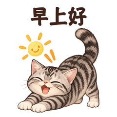
01早上好PNG
每一句回应，都有一只猫
沿用原始卡通形象和手绘贴纸框架：中文短句在上，猫咪动作在下。保留各自的毛色、眼睛和神态，用72个独立画面，接住聊天里的小情绪。
奶思 / 静态专辑
灰虎斑奶思把问候、感谢和小情绪变成软萌回应，陪你聊好每一天。

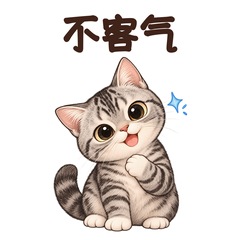
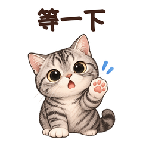
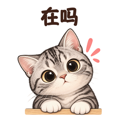
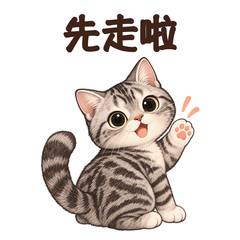
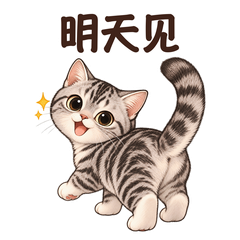
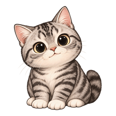
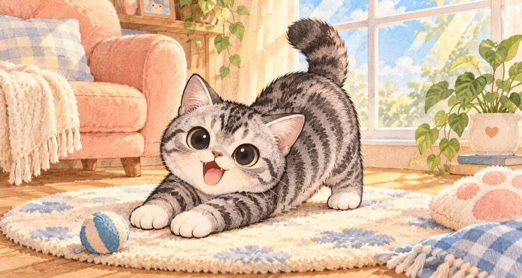
古德 / 静态专辑
绿眼棕虎斑古德认真接话，也认真撒娇，让日常聊天多一点可爱和热闹。
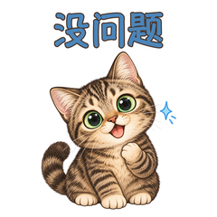
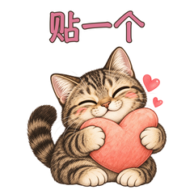
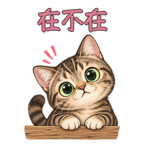
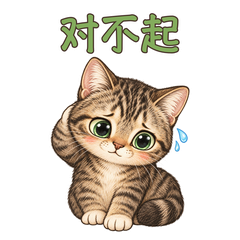
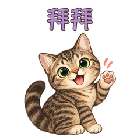
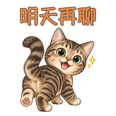
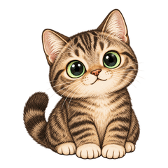
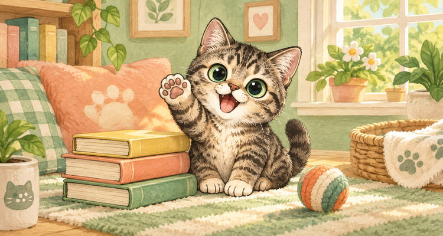
范恩 / 静态专辑
蓝眼长毛猫范恩送来轻轻的问候、甜甜的贴贴和暖暖的陪伴，软萌回应每一句话。